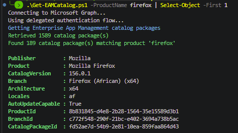

If you’ve clicked Apps > Windows > Create > Enterprise App Catalog app in Intune, you’ve seen the catalog picker. Search, pick an app, pick a variant, next, next, done.
What the picker doesn’t give you is the big picture. Which vendors are in there? How many variants of Firefox are there (spoiler…a lot)? Which apps are MSI and which are EXE? What version is the catalog currently offering? How is detection configured for this variant?
I wanted those answers, and I wanted them without clicking through the portal one app at a time. So, I went looking at what Microsoft Graph could tell me. This post walks through the Graph calls behind the catalog, what the data actually means, and shares a script, Get-EAMCatalog.ps1, that pulls the lot back into PowerShell or a nice little HTML report.
TL;DR
- The catalog is available in Microsoft Graph on the
betaendpoint atdeviceAppManagement/mobileAppCatalogPackages. - Each package gives you the publisher, product, variant (branch), version, architecture, locales and whether it is auto-update capable.
- For the good stuff (installer type, install commands, MSI codes, detection rules) you ask Graph to convert a package into a preview Win32 app using
convertFromMobileAppCatalogPackage. - There is no “last updated” date anywhere. If you want to track catalog updates, save the output and compare it over time using the
BranchId. I didnt get that far with this post, maybe another day. - The script is on GitHub: Get-EAMCatalog.ps1
- Make the script output look pretty by using the
-HTMLReportswitch
Before We Begin
Enterprise App Management (EAM) is available in E5/G5 and as a standalone add-on licence. The intent here from Microsoft is instead of packaging your own Win32 apps, or pulling from the Microsoft Store, you pick an app from Microsoft’s curated catalog and Intune creates a Win32 app for you, content and all. Microsoft looks after the packaging and updates the catalog with new versions.
That last part is what got me interested. If Microsoft is updating the catalog for me, I’d like to see what is in it and what variants and versions are supported.
Prerequisites
License
You need an Enterprise App Management licence (E5/G5 or the standalone add-on) for the tenant:
Permissions
Everything in this post (and script) is read-only. The only scope you need is:
DeviceManagementApps.Read.All
The script supports delegated sign-in, or an app registration with a certificate or client secret if you want to run it unattended.
Modules
Just the one…Microsoft.Graph.Authentication. It gives us Invoke-MgGraphRequest, which is all we need. The script won’t install it for you so if it’s missing, it stops and tells you how to install it.
Install-Module Microsoft.Graph.Authentication -Scope CurrentUser
How the script works
There are only two Graph calls behind the script, both on the beta endpoint:
deviceAppManagement/mobileAppCatalogPackagesreturns every entry in the catalog. This is the basic info for the catalog entry.deviceAppManagement/mobileApps/convertFromMobileAppCatalogPackage(mobileAppCatalogPackageId='{id}')returns the Win32 app Intune would create from a catalog entry. This is the more detailed info for the catalog entry.
A normal run of the script does this:
- Connects to Graph.
- Pages through the catalog (following
@odata.nextLink, 100 entries per page). - Filters on
-ProductNameand-Publisher, if you used them. - If you used
-DetailedInfo, gets the template for each entry, 20 at a time using$batch. - Returns the records, or writes the HTML report if you used
-HtmlReport.
Basic info
With no parameters, you get one record per catalog entry, which is one variant of an app:
.\Get-EAMCatalog.ps1 -ProductName firefox | Select-Object -First 1
Publisher : Mozilla
Product : Mozilla Firefox
CatalogVersion : 156.0.1
Branch : Firefox (African) (x64)
Architecture : x64
Locales : af
AutoUpdateCapable : True
ProductId : 8b831845-d4e8-2b28-1564-35e15589d3b1
BranchId : c772f548-290f-21bc-e402-3694a738b5ac
CatalogPackageId : fd52ae7d-54b9-2e81-10ea-859faa864d43

Each property comes straight from the catalog entry:
| Script property | Graph property | What it is |
|---|---|---|
Publisher | publisherDisplayName | The vendor |
Product | productDisplayName | The app name |
CatalogVersion | versionDisplayName | The version the catalog is offering now |
Branch | branchDisplayName | The variant name, usually with language, architecture or installer type in it |
Architecture | applicableArchitectures | x64, or x86,x64 when the variant supports both |
Locales | locales | Joined into one string, e.g. af or mui |
AutoUpdateCapable | packageAutoUpdateCapable | Whether the app can update itself |
ProductId | productId | Shared by every variant of a product |
BranchId | branchId | One per variant |
CatalogPackageId | id | That variant at its current version |
At the time of writing, paging through the full catalog takes about 3 to 4 seconds for 1,589 entries.
Products and variants
Looking at what the catalog endpoint returns and you’ll see each entry has three IDs:
"id": "1ca1f38f-79c3-1267-a3cb-a529fb9555d8",
"productId": "14d22241-3009-3e61-aab9-371adb91a74b",
"branchId": "0faabe51-1002-e4a2-8984-371adbaf9b20"
- productId is the app. Every product variant entry has the same one.
- branchId is the variant of that app. Graph calls them branches, I’m calling them variants (you say potato I say potatoe) because that’s what they are. Firefox has one for pretty much every language, and Chrome has separate MSI and EXE variants.
- id identifies that variant at its current version. When a new version is added to the catalog, the branchId stays the same, but the id and versionDisplayName change.
So each entry is simply one variant of an app, at the version the catalog is offering today. Apps with a single variant, like Gephi, have one entry. Firefox has dozens. That’s why, at the time of writing, there are 932 products but 1,589 entries.
The script uses them like this:
- The HTML report counts Products by unique ProductId and Variants by unique BranchId.
-DetailedInforequests the detail for each entry using its CatalogPackageId.- BranchId is the one to compare on if you want to track updates.
Detailed info
Add -DetailedInfo and the script asks Graph to convert each entry into a Win32 app template, then adds these properties to the record:
| Property | What it is |
|---|---|
Description | The app description (productDescription is always empty on the catalog entry) |
InstallerType | MSI or EXE, worked out by the script |
AllowedArchitectures | Architectures the Win32 app would allow |
FileName, SetupFilePath, Size | The installer file |
InstallCommandLine, UninstallCommandLine | What Intune would run |
DisplayVersion | The version on the Win32 app |
MsiProductVersion, MsiProductCode, MsiUpgradeCode | For MSI installers |
DetectionVersions | Any versions used in the detection rules |
DetectionRules, RequirementRules | Each rule as a readable line of text |
MinimumWindowsRelease | Minimum Windows version, e.g. 1607 |
RunAsAccount, MaxRunTimeInMinutes, RestartBehavior | Install behaviour |
TemplateError | Only set if Graph couldn’t return a template for that entry |
MSI or EXE?
Neither the catalog entry nor the template has an installer type property, so the script works it out. If the template has msiInformation, or the setup file ends in .msi, it’s an MSI. If it ends in .exe, it’s an EXE. At the time of writing, that’s 749 MSI and 840 EXE.
This is also why filtering on MSI needs -DetailedInfo, and takes longer. The installer type only exists once the templates have been retrieved.
And who would have thought… you need to know the variant you are deploying because deploying an EXE variant to a device with the MSI can result in a side-by-side install. We could write a whole blog on variant behavior and how to update apps relaiably – but thats not for this blog.
Rules as text
The template returns rules as objects in a rules array, each with a ruleType of detection or requirement. (Ignore detectionRules and requirementRules on the template. They are always empty.) The script turns each rule into one line, so you can read them in the console or the report:
File: %ProgramFiles%\Google\Chrome Remote Desktop\154.0.8037.40\remoting_desktop.exe version equal 154.0.8037.40 (32-bit)
Registry: HKEY_LOCAL_MACHINE\SOFTWARE\Microsoft\Windows\CurrentVersion\Uninstall\{9CCBB3AA-219D-4A90-841E-DD59AE8A46C6}\DisplayVersion string equal 154.0.8037.40 (32-bit)
Using $batch
One template per entry means 1,589 calls for the full catalog. One at a time, I had time to make a coffee. So the script groups them into Graph $batch requests of 20, which is 80 batches for the whole catalog. Anything that comes back throttled (429) or with a 5xx error is retried, respecting Retry-After. The full detailed run for the whole catalog takes around 20 seconds.
Filtering first
-ProductName and -Publisher are applied to the basic info before any templates are requested. Both match anywhere in the name, so chrome finds Google Chrome and Chrome Remote Desktop, and google finds both Google and Google LLC.
.\Get-EAMCatalog.ps1 -DetailedInfo -ProductName chrome
Anything else you need to filter on, like architecture or auto-update, is just a property on the record, so use Where-Object:
.\Get-EAMCatalog.ps1 | Where-Object { $_.AutoUpdateCapable }
The HTML report
PowerShell output is great, but sometimes you just want to have a look around. Add -HtmlReport and the script saves EAM-Catalog.html to your temp folder and opens it in your browser. It doesn’t return records to the pipeline when you do this.
.\Get-EAMCatalog.ps1 -HtmlReport
- Summary counts at the top for publishers, products, variants, auto-update capable and architectures (plus MSI and EXE with
-DetailedInfo). - A search box, and filters for architecture, auto-update and installer type. The filters are built from the data, so you only see options that exist.
- Apps grouped by publisher, then product, collapsed by default.
- Click a variant to see its IDs, and with
-DetailedInfo, its commands, MSI codes, detection rules and install behaviour.
It’s a single file with no external dependencies, so you can open it offline or send it to someone. It follows your light or dark mode too, because we all know dark mode is the only mode.
Without -DetailedInfo the report is quick to generate and still shows everything from the basic info. You can also filter it:
.\Get-EAMCatalog.ps1 -HtmlReport -DetailedInfo -Publisher mozilla
Examples
# Everything, basic info
.\Get-EAMCatalog.ps1
# Detailed info for Chrome only
.\Get-EAMCatalog.ps1 -DetailedInfo -ProductName chrome
# How many variants per architecture
.\Get-EAMCatalog.ps1 | Group-Object Architecture | Select-Object Count, Name
# arm64 variants (none at the time of writing)
.\Get-EAMCatalog.ps1 | Where-Object { ($_.Architecture -split ',') -contains 'arm64' }
# All MSI variants
.\Get-EAMCatalog.ps1 -DetailedInfo | Where-Object { $_.InstallerType -eq 'MSI' }
If you’re going to run a few queries, get the catalog once and query the variable:
$catalog = .\Get-EAMCatalog.ps1 -DetailedInfo
$catalog | Where-Object { $_.InstallerType -eq 'EXE' -and $_.AutoUpdateCapable }
Run Get-Help .\Get-EAMCatalog.ps1 -Examples for the full list.
A few things I noticed
- No arm64 variants. At the time of writing, every variant is x64 (1,280) or x86 and x64 (309).
- Publisher names aren’t consistent. “Google” and “Google LLC” are separate publishers. The partial match on
-Publisherhelps here. - No requirement rules.
RequirementRulesis empty for every variant. Requirements come fromAllowedArchitecturesandMinimumWindowsReleaseinstead. - Detection is file and registry only. No scripted detection methods.
- Detection doesn’t always match the app version. BCF Manager for Tekla 6.2.16 detects on a DLL at version 5.4.6.855. It’s worth checking
DetectionRulesfor anything important before you deploy it.
Summary
The script gives you the whole Enterprise App Management catalog in one place. A plain run gets you the basic info in a few seconds. -DetailedInfo adds how each app would be deployed. -HtmlReport makes it easy to browse. Filter on product or publisher first and the detailed run is quick too.
Grab the script, run it against your own tenant and have a look around. Happy automating friend!